Investigation | Bitcoin History |
The Evolution of The Bitcoin Whitepapers
There Were Four Versions By Satoshi Nakamoto. Three are Known. One Remains Lost...
TL:DR - The four Whitepaper versions timeline graphic is below - details at TheBitcoinWhitepapers.com
The Bitcoin Whitepaper we know today was revised by Satoshi after its October 31st 2008 announcement. Twice. The four known copies of this historic document are compared below, including an overlooked copy preserved by Nicholas Bohm. For more on the legend of Bohm and Satoshi see our exclusive: Forgotten Satoshi Nakamoto Emails Discovered with Nicholas Bohm
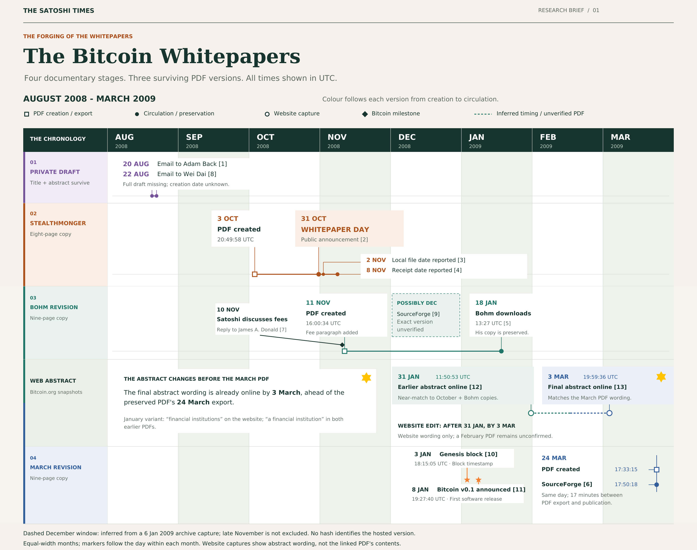
Happy Bitcoin Whitepaper Day - As the Bitcoin Whitepaper reaches its 18th anniversary, many readers will recognize the nine-page document as currently hosted at Bitcoin.org/bitcoin.pdf
But the metadata in this file records a creation date of March 24th 2009. This is nearly five months after the infamous October 31st Whitepaper announcement, and well after the Genesis Block on January third...
Thus, there have been multiple versions of the Bitcoin Whitepaper over time. At least three of them.
The first survives only through its title and abstract. The second had eight pages, not nine. And the third, preserved by an early Bitcoin user, was only recently rediscovered in 2024.
1. “Ecash” Title - Before the name “Bitcoin” appeared
Starting with the first known version of the Bitcoin Whitepaper - On August 20th 2008, Satoshi contacted Adam Back from satoshi@anonymousspeech.com, asking about how to cite Adam’s Hashcash paper. This was the first email we know of that Satoshi sent to anyone. Two days later Satoshi contacted Wei Dai about citing Dai’s b-money paper. In both emails the title for the Whitepaper was; “Electronic Cash Without a Trusted Third Party.” An Abstract introduction, and a link to a draft on a file-hosting service were also shared.
But, the full draft Whitepaper PDF from these emails remains missing. The link no longer works and no known copy was saved or archived. All we have to go on from this is the Abstract and the working "Ecash" title. For more background on this first-draft-Whitepaper story see Back’s correspondence and Gwern’s article on the Dai emails with Satoshi.
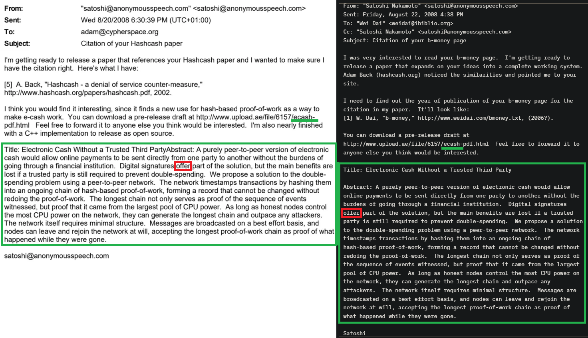
The old download address for this file suggests that Satoshi was calling his project “ecash” at the time. Yet the surviving abstract introduction within the body of these two emails is also remarkably close to the October 31st version. Only one word in the abstract changed - “offer” became “provide.” But, the main difference is in the title. The title eventually changed, and the “Bitcoin” name was revealed, while the central explanation of a peer-to-peer network, proof-of-work and a shared transaction history were already present in August 2008. This shows that Bitcoin’s architecture was already well defined in Satoshi’s mind when he reached out to Adam and Dai, though it’s name was still in flux or being secretly withheld strategically.
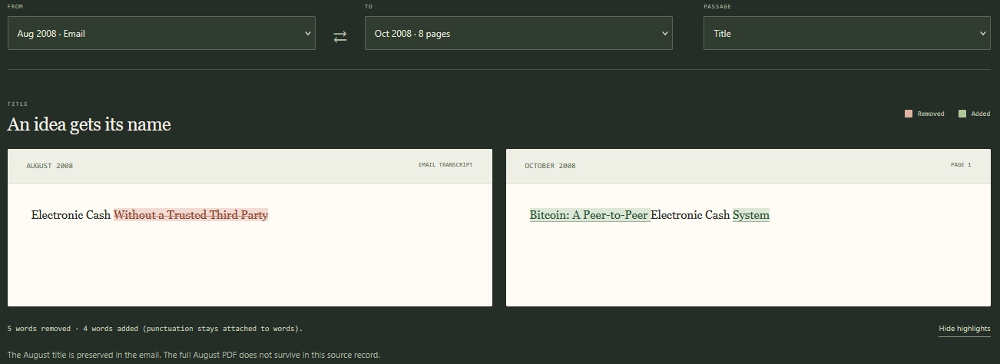
2. October 31st Whitepaper likely 8-pages via StealthMonger
Two months latter, Satoshi publicly announced Bitcoin on the Cryptography mailing list on October 31st 2008 at 18:10:00 UTC. The message included the new title and Abstract, with a link to bitcoin.org/bitcoin.pdf. The announcement did not attach a permanently fixed copy of the full Whitepaper PDF file. Thus, the file behind the bitcoin.org/bitcoin.pdf link could change without notice and has. But since Bitcoin was a ghost town in the beginning, no archived early copies of this foundational document exist at that link. Thus, finding the originally published October 31st Whitepaper was impossible.
Until January 2015. A public request for the original paper received an answer from StealthMonger, an anonymous cryptography mailing-list user. He had an eight-page Whitepaper with a local file date of November 2nd 2008. Just 48 hours after it was announced…
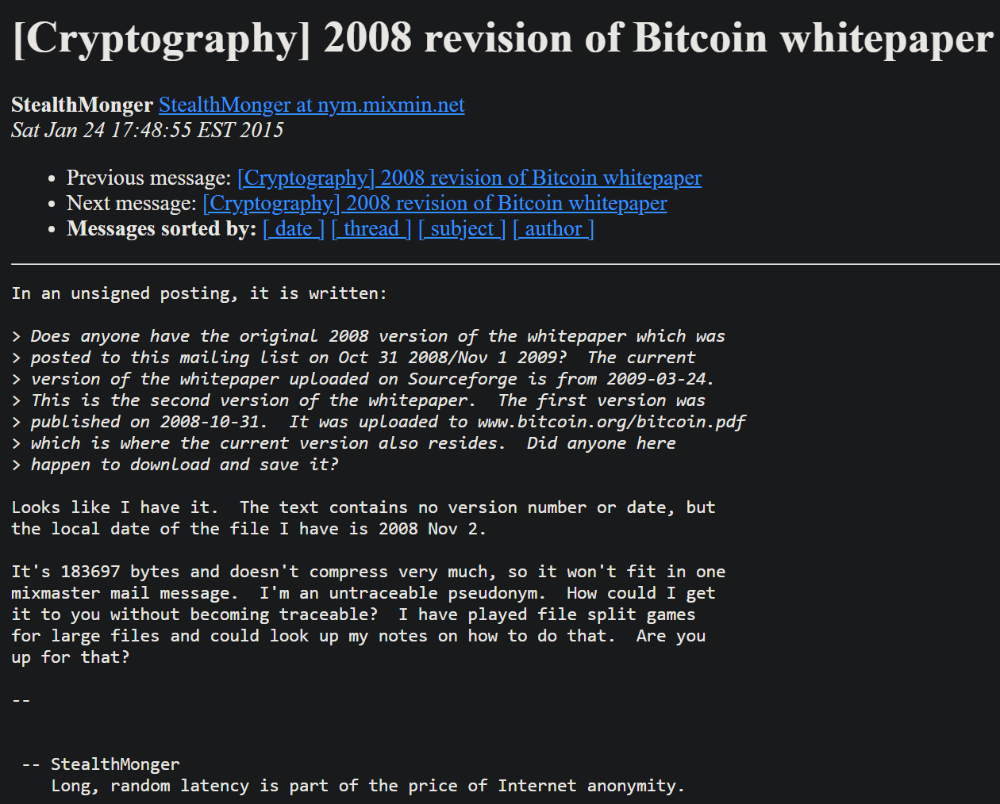
Soon after this, Bitcoin OG - Ray Dillinger, posting as Cryddit, reported that Satoshi had emailed him privately and sent him a hash of the Whitepaper back in 2008, so he could verify they were discussing the same version of the Whitepaper. The hash Cryddit published matches the recovered eight-page StealthMonger file. This corroborates the StealthMonger file as authentic.
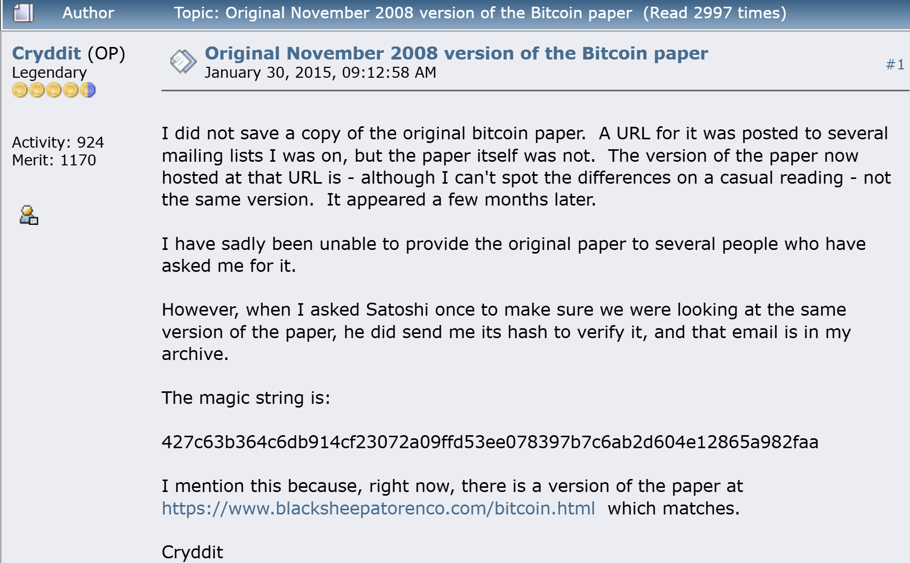
Furthermore, this email exchange with Satoshi also implies confirmation of there being multiple versions of the Whitepaper by Satoshi. However, the raw email was not reproduced in that Bitcoin forum thread by Cryddit.
Maybe one day Cryddit will publicly release more of their correspondence with Satoshi for the history books. But perhaps it’s safer for everyone to delete such records.
In any case, a legendary Bitcoin nym, Gwern, has re-hosted the StealthMonger PDF for us and documented why it cannot be the first August rough draft version. Its recorded export time is October 3rd 2008 at 20:49:58 UTC, and it also carries the modern Bitcoin title. Its title and abstract also match the October 31st public announcement email exactly. Together with the November 2nd download time by StealthMonger, these details make it a strong candidate for the October 31st release-day paper. Conversely, the other versions have various differences and conflicting dates and words that do not match the announcement email.
One very interesting text difference versus newer copies in the StealthMonger 8-pager is in section 6 - Incentive. This version has no paragraph explaining transaction fees, or mention of a transition to funding the network entirely through fees. But, Bohm’s November 11th 2008 version of the Whitepaper does have these new details.
3. Rediscovered Whitepaper on Bohm’s hard drive in 2024
Bohm was a British solicitor with a long-standing interest in cryptography. He became an early Bitcoin user and helped Satoshi troubleshoot software bugs in early 2009. Years later, while providing evidence for the COPA vs Wright lawsuit, Bohm searched his hard drive for old Whitepaper files. He found one, or rather, the third Whitepaper version.
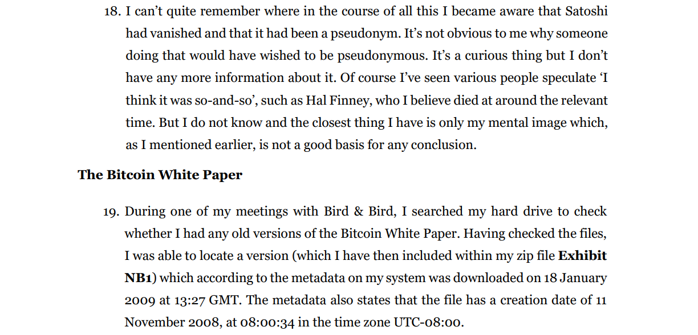
In paragraph 19 of his witness statement, Bohm said his system metadata recorded a download date of January 18th 2009 at 13:27 UTC for this Whitepaper file. Its metadata creation date was also, November 11th 2008 - 16:00:34 UTC, only a dozen days after the October 31st version was released.
This nine-page Whitepaper was included as evidence in the COPA lawsuit - Exhibit NB1 - and was examined by forensic examiner Patrick Madden in Appendix PM3. He found no equivalents among the disclosure files or online archived copies he checked, and his searches for its distinctive wording produced no relevant online match. Its MD5 hash fingerprint was also unfamiliar to those searches. Bohm had rediscovered an original unknown version of the Whitepaper.
Madden found no indications of manipulation and concluded that it was very likely authentic, and an intermediate third version. The fonts metadata of the PDF also matched the other versions, including the document language (en-GB) and software used to create the file.
There is also some evidence of this Bohm version being publicly available in December of 2008, before Bohm’s download of the file on January 18th 2009. A January 6th 2009 Wayback capture of the SourceForge Bitcoin project shows bitcoin.pdf added “1 month ago” by nakamoto2. This supports a possible December 2008 availability of the Bohm Whitepaper Version. This was also before the final March 24th 2009 Whitepaper version was uploaded to Sourceforge.
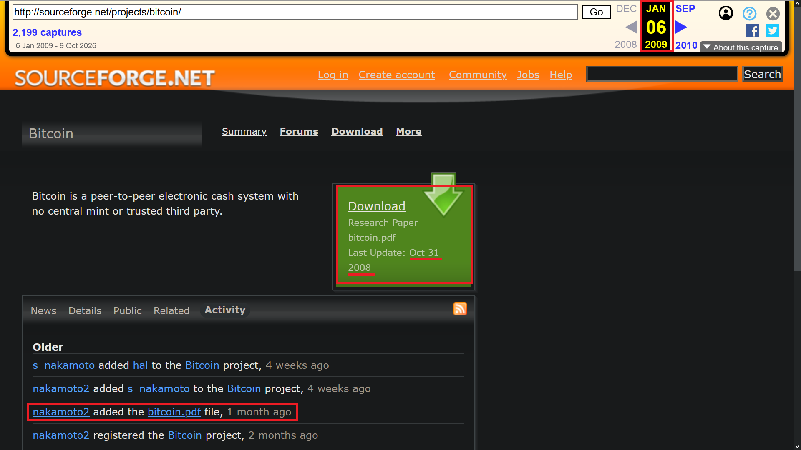
However, there is a strange contradiction in the above picture: “last updated: Oct 31 2008” versus the “1 month ago” fact that places the file being added to SourceForge in December. Thus, this shows Satoshi might be omitting some facts here, since he can control that “last update: Oct 31 2008” line. There may be some other reason for this mismatch in dates though.
Compared with the October 31st Whitepaper, Bohm’s third version added a new paragraph of 59 words to section 6. The new paragraph describes a transaction’s output value as its input value minus a fee, with the accumulated fees increasing the block incentive. It then describes possible security budget fulfillment through fees alone once a predetermined number of coins has entered circulation. This is one of the first times in the Bitcoin zeitgeist where it is hinted that Bitcoin will have a limited supply without inflation. Post Whitepaper publishing, but pre-Bitcoin network launch.
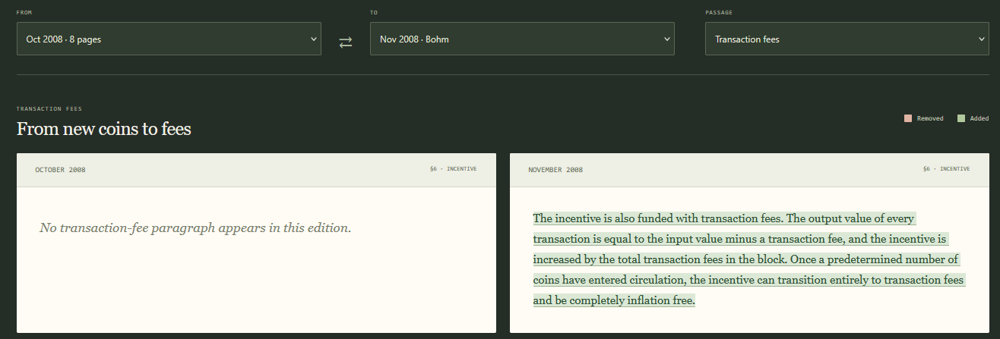
The timing of this new detail is interesting. In the mailing-list discussion at this time, James A. Donald objected to the Bitcoin design, since paying for the system through new coin creation inherently required inflation. Up until this point, Satoshi had not explicitly mentioned whether Bitcoin would be inflationary or deflationary, so James assumed it would be inflationary. Satoshi counter replied on November 10th 2008 at 02:14:30 UTC, explaining how the system could use transaction fees as an incentive instead and be totally inflation free.
The Bohm Whitepaper metadata shows an export time about 38 hours after this conversation.
Thus, there is a close fit between the discussion and the added fees-inflation paragraph. It suggests that this discussion may have helped prompt the revision, or at least clarify Satoshi’s intention for it to be inflation free, which was not clear until that counterpoint was made.
Strangely, the cornerstone inflation-free feature of Bitcoin appears to be absent beforehand. It’s possible Bitcoin as a deflationary currency may be a last minute add-on afterthought by Satoshi, after he received push back from James A. Donald regarding the danger of Bitcoin becoming an inflationary currency. It’s also possible Satoshi was avoiding this detail to keep it a secret until the last moment as a surprise bonus incentive on launch day. Similar behavior by Satoshi, surrounding the disclosure of “Bitcoin”’s name to Adam Back and Wei Dai is reflected here. A consistent stealthy Satoshi.
In relation, Satoshi later on supplied more hints related to this inflation-fee discussion. In a private email to Martti Malmi on May 3rd 2009, while directing Marrti to the original mailing-list discussion, he wrote:
“Inflation issues were superseded by changes I made later to support transaction fees and the limited circulation plan.”
Whether this plan for limited circulation and inflation-free Bitcoin was pre or post James A. Donald’s scolding is still a mystery. Maybe it was both. Monetary policy isn’t exactly the last thing you think about when creating money. It’s the first thing you think of, and then the last you reveal. Perhaps James simply conjured the cat-out-of-the-bag prematurely, and Satoshi capitulated to the idea publicly, while intending to keep it secret until network launch day. Another example of this Satoshi behaviour for keeping his cards close - 21 million coins, and no more, wasn’t known until network launch day in January 2009. The Whitepaper and earlier discussions make no mention of this key detail.
4. The Final March - Whitepaper
The familiar, fourth and final Bitcoin.org Whitepaper metadata has an export date of March 24th 2009 at 17:33:15 UTC. Corroborating this is Appendix PM3 from the COPA trial, which shows an archived SourceForge RSS entry with a publication time of 17:50:18 UTC that day for the same PDF, alongside an MD5 matching that file.
By this stage, Bitcoin was running for almost three months. Satoshi had made his last revision of the Whitepaper. Up until this point he had been referring to it as a “Research Paper” on the Bitcoin SourceForge. But after this last version was published, it was redefined as the “Design Paper.”
In this final version, the fee paragraph changed again. Bohm’s version described a fee deducted from every transaction. The final march version makes the wording conditional: a fee is the difference if the outputs are worth less than the inputs. The word “can” is also used, instead of “is”.
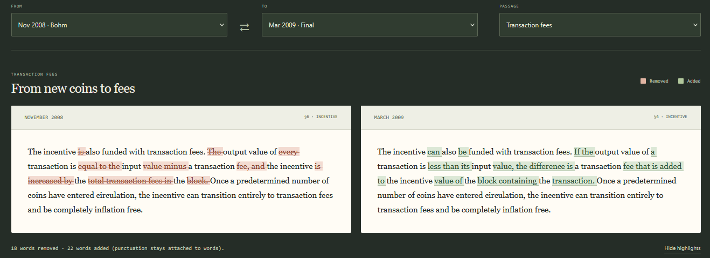
This final revision shows a shift in tone by Satoshi. His language is much less certain now, and consequently Satoshi’s forecast for Bitcoin’s future broadens. Bitcoin’s future network funding by fees alone “can” be an option, but no longer “IS” the only option. Thus, the implication is other possibilities not accounted for yet could be in the offering. The Bohm copy uses certain language to outline a defined path with fees. While, the final copy implies that path is simply one option he envisions, there may be others. Perhaps this was a wise change by Satoshi, giving Bitcoin the option to evolve and make it’s own path forward at the appropriate time.
Furthermore, In this final version, the Abstracts language around the security assumption changed. “Honest nodes controlling the most CPU power” was changed to “a majority of CPU power controlled by nodes not cooperating to attack the network.”
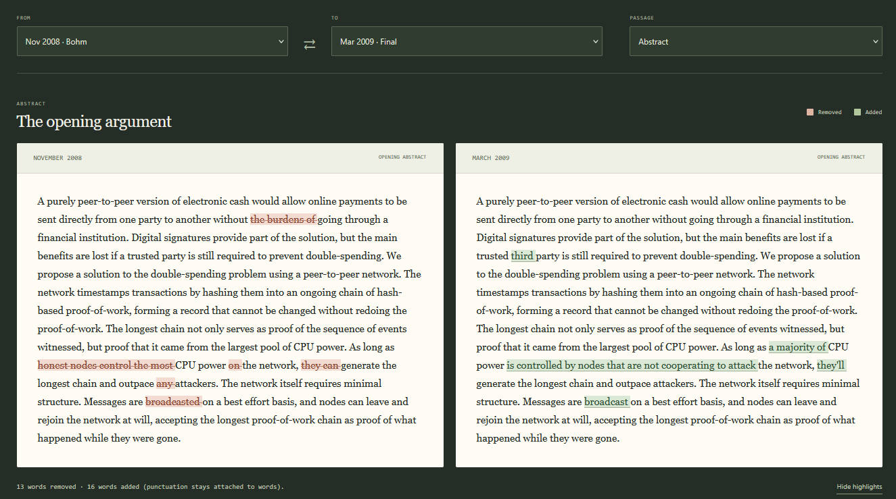
Of note too is the removal of “the burdens of” related to financial institutions. Perhaps this was Satoshi trying to soften the language and make the Whitepaper more appealing to Tradfi. “Broadcasted” was also changed to “broadcast” in a likely spell-check-efficiency-nerd-snipe compulsion by Satoshi. “they can” is also changed to “they’ll” in the same kind of efficiency compulsion for saving space. But this also makes the outpacing of attackers idea more certain in the Abstract.
More significantly are the changes in the simplified payment verification discussion. Satoshi removes an overly honest admission in the Bohm copy involving vulnerability to reversal of verified transactions. Which, admittedly, is a contradiction on the surface and opens up a can of technical worms better left unsaid.
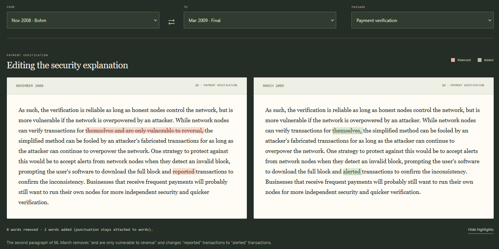
This policy of not going too deep into the technical weeds by Satoshi was also confirmed in a private email with Malmi:“…getting into the design details just opens a can of worms that can't be answered without a deep understanding of the system.”
Furthermore, he changes the description of an implied defence mechanism from “reported” to “alerted” in relation to this same issue of reversal that has been omitted. This “alerted” mechanism may be a reference to the alert system in Bitcoin’s early days, where only a few people could send out a network wide alert message to warn users of an issue and to upgrade their software. Soon after Satoshi disappeared the alert system was deprecated in favor of a less centralized and more distributed model for network warnings.
Digressing back to the final Whitepaper changes, the difficulty-adjustment paragraph also moved from section 6 to section 4 with its wording unchanged. This was a good move, since it feels awkward and tagged on to the end of section 6. It makes more sense to be in section 4 and flows better with the language there.
Overall, there were around 53 word edits from Bohm’s version to the final March revision: 22 in the abstract, 22 in the fee paragraph, seven in the simplified payment verification discussion, one in the network instructions and one for Satoshi’s address, changing from Satoshi@vistomail.com to satoshin@gmx.com. This email preference change was also corroborated by a newly released email between Satoshi and Bohm.
The last puzzle piece for this final Whitepaper revision can be seen in two Wayback snapshots of the Bitcoin.org website, where the Abstract of the paper was also published. The oldest of these two snapshots from January 31st 2009 shows the same language as seen in Bohm’s copy, and the October 31st copy (both have the exact same Abstract). Meanwhile, the second oldest snapshot of the Bitcoin.org website from March 3rd 2009 has an Abstract that matches the final version instead.
Therefore, a possible timeline of events can be implied here, where Satoshi began working on the final version of the Whitepaper after January 31st and before March 3rd 2009. He eventually uploaded the final Abstract to Bitcoin.org on or before March 3rd and followed up with an upload of the final Whitepaper PDF to SourceForge on March 24th 2009. Thus, it’s possible the final PDF was available on Bitcoin.org in February of 2009.
Other clues in the files
Metadata inspection of the three Whitepapers also found a consistent software production profile: Writer, OpenOffice.org 2.4, PDF 1.4, British English and US Letter pages.
All seven embedded font programs match byte for byte between the StealthMonger and Bohm copies. Six also match the March final copy.
These are useful signs of continuity between the files.
Conclusions: What the Whitepaper revisions tell us about Satoshi
Across the public writings reviewed for this investigation, we have not located any Satoshi announcements identifying these replacement Whitepapers. None of the files carry visible revision numbers either.
This may have simply been a low key working process by Satoshi, not a nefarious plot to back date the Whitepaper with undisclosed revisions. Satoshi circulated the draft, engaged with criticism, expanded the explanation on incentives and continued polishing the paper before and after the Bitcoin network launched. The timing of the fee-inflation discussion gives us a plausible reason for the third November addition, revealed by Bohm. The final March edits show further attention to how readers would understand the system, with more permissive language for possible future scenarios involving Bitcoin fees. Indeed, Satoshi started to lean towards the possibility of optional fees based on market dynamics in future discussions on the same topic. A fee market.
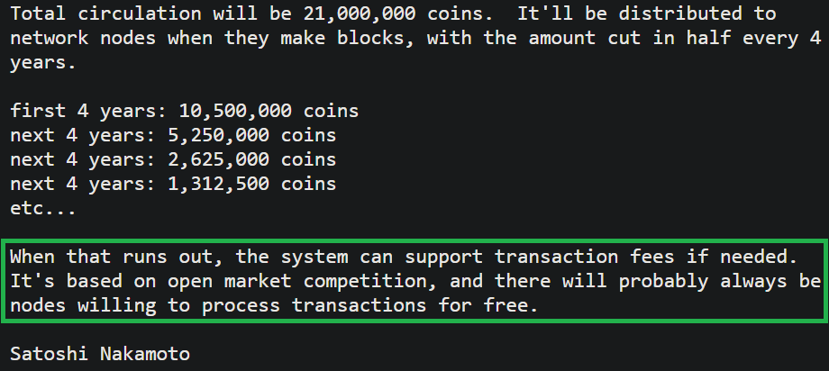
On this file, Satoshi’s correspondence moved from a confident prediction of eventual fee-only compensation in November to a more conditional, market-dependent explanation by January.
Bohm’s copy makes this revision evolution around fees being certain to less certain more rich. Without it, the fee paragraph appears as one addition somewhere between October and March. With it, we can see the paragraph appear in November and then be revised in March. Bohm’s copy of the Whitepaper revealed a step in Satoshi’s thought process, unknown until 2024.
However, the full August first draft Whitepaper still remains lost to history. We know its title and abstract, but not the full detail of it’s contents. Maybe one day it will show up.
One fun aspect of this study is that for any future charlatans appealing to The Whitepaper as a source of their power and authority, a good retort will be to ask them, which Whitepaper ?
Also, Satoshi may have been a bit of a figure-it-out-in-the-moment-perfectionist, who didn’t like to advertise the first part of that neurosis, in fulfillment of the perfectionist doctrine. He was also a bit sneaky here with these no-notice Whitepaper changes, last minute revelations for the brand name and monetary policy and elsewhere with Bitcoin’s code revisions too. More on that in a future exposé.
Explore and compare the detailed passages of the four Whitepapers at TheBitcoinWhitepapers.com
Sources and comparison notes
The numbers below correspond to the opener chart and timeline. Links in the article lead directly to the additional evidence.
- Adam Back correspondence, Exhibit AB1, first email, 20 August 2008.
- Satoshi’s public announcement, 31 October 2008.
- StealthMonger’s local file date, reported 24 January 2015.
- StealthMonger’s receipt date and SHA-256, reported 26 January 2015.
- Nicholas Bohm witness statement, paragraph 19.
- Patrick Madden, Appendix PM3, paragraphs 33–35 on SourceForge and 41–73 on Exhibit NB1.
- Satoshi’s reply to James A. Donald, 10 November 2008 UTC.
- Wei Dai correspondence and Gwern’s investigation.
- SourceForge capture dated 6 January 2009. The reproduced screenshot lists
bitcoin.pdfas added “1 month ago,” supporting possible December 2008 availability. The rounded date does not exclude late November or identify the PDF revision. - Genesis block timestamp in Bitcoin Core, corresponding to 3 January 2009 at 18:15:05 UTC. This is the timestamp encoded in the block.
- Bitcoin v0.1 software announcement, 8 January 2009 at 19:27:40 UTC. The mailing-list archive displays the equivalent time in EST.
- Bitcoin.org capture dated 31 January 2009, at 11:50:53 UTC. The website preserves the earlier abstract wording, with one phrase differing from the October and Bohm PDFs.
- Bitcoin.org capture dated 3 March 2009, at 19:59:36 UTC. The website’s abstract matches the final March PDF after normalising whitespace and PDF line wrapping.
Files and checks. The comparison uses the StealthMonger PDF, Bohm PDF and March PDF, checked against the repository’s first and second text-comparison reports. Bohm’s file has SHA-256 e6cc7c952c688b234f9872c3e2f50060ae6556fd27925cba503c6460048e50a9.